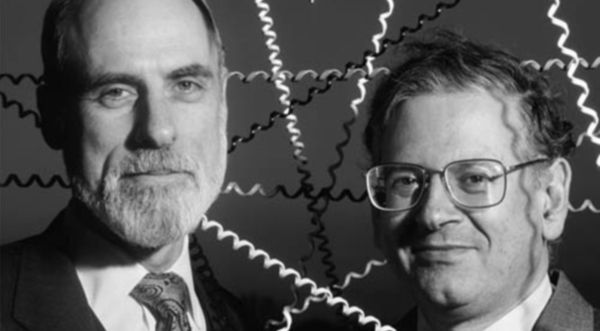

📋 Resumo
Antes disso, existiam redes isoladas, como a ARPANET, que funcionava bem dentro de um círculo restrito de universidades e laboratórios ligados ao Departamento de Defesa dos Estados Unidos. Mas o mundo estava mudando rapidamente. Novos tipos de redes estavam surgindo: redes por rádio, redes por satélite, redes experimentais em diferentes países e redes privadas de corporações. E havia um problema gigantesco: essas redes não conversavam entre si. Eram como cidades isoladas sem estradas, ou ilhas tecnológicas separadas por oceanos de incompatibilidade.
📚 Detalhes
Foi nesse cenário que dois pesquisadores brilhantes, Vinton Cerf e Robert (Bob) Kahn, apresentaram ao mundo a proposta do TCP/IP, um conjunto de protocolos que mudaria para sempre a comunicação humana. Eles publicaram, em maio de 1974, no IEEE Transactions on Communications, o artigo “A Protocol for Packet Network Intercommunication”, que não era apenas um texto técnico, mas um manifesto visionário. Ali estava a resposta para um problema que ninguém tinha resolvido: como interligar redes diferentes de forma que parecessem uma única rede? Para entender a importância dessa revolução, é preciso voltar alguns anos.

Em 1972, Bob Kahn havia demonstrado publicamente a ARPANET na International Computer Communication Conference (ICCC). Foi a primeira vez que muitas pessoas viram computadores de diferentes lugares conversando uns com os outros. Mas a apresentação também deixou claro o limite daquele modelo: a ARPANET era apenas uma rede; fora dela existiam outras redes independentes que funcionavam com tecnologias completamente diferentes. A pergunta que Kahn fazia era simples e poderosa: e se pudéssemos criar um “sistema de redes”, uma rede de redes? Kahn começou a trabalhar nessa ideia em 1973. Mas rapidamente percebeu que precisaria de alguém com profundo conhecimento de protocolos e estrutura de sistemas. Foi então que chamou Vint Cerf, que estava na Universidade de Stanford e era um dos pesquisadores mais talentosos da área. Os dois formaram uma dupla que, em pouco tempo, seria comparada a Watson & Crick, Shannon & Weaver, e outros pares que revolucionaram áreas inteiras da ciência.
A ideia fundamental de Cerf e Kahn era a seguinte: para unir redes diferentes, não fazia sentido impor um tipo único de hardware, um único formato de transmissão ou uma única operadora. Isso seria impossível – cada rede tinha suas próprias características, velocidades, tecnologias e limitações. A solução, então, não poderia vir de baixo (do hardware), e sim de cima, através de um esquema universal que funcionasse independente do que estivesse acontecendo na camada física. Em outras palavras, eles precisavam criar uma “linguagem comum” que todo tipo de rede pudesse entender.
Essa linguagem seria o TCP/IP.

TCP (Transmission Control Protocol) e IP (Internet Protocol) eram duas partes de um mesmo sistema. O IP definiria como pacotes de dados deveriam ser endereçados, enviados e encaminhados entre redes diferentes. Ele funcionaria como um carteiro universal: não importa de onde o pacote vem, nem para onde vai, ele sabe o caminho. Já o TCP garantiria que a comunicação fosse confiável, cuidando de retransmitir pacotes perdidos, ordenar pacotes que chegassem fora de sequência e assegurar que toda a conversa entre computadores fosse consistente.
Cerf e Kahn criaram algo radicalmente novo: uma arquitetura aberta, não vinculada a nenhuma empresa, governo ou tecnologia específica. Era o oposto do que empresas de telecomunicações faziam na época. AT&T, por exemplo, acreditava que tudo deveria ser centralizado. Mas o TCP/IP era descentralizado, robusto e democrático. Qualquer rede que implementasse o protocolo poderia se conectar à “rede das redes”. Era uma filosofia de design que refletia, de certo modo, valores acadêmicos e colaborativos: abertura, interoperabilidade, liberdade técnica. Outro ponto genial foi o conceito de “datagramas” do IP. Ao invés de estabelecer um circuito fixo entre remetente e destinatário (como na telefonia tradicional), o IP simplesmente enviava pacotes soltos pela rede, confiando que eles encontrariam seu destino. Era como se cada pacote fosse um viajante autônomo, capaz de escolher rotas alternativas caso alguma parte da rede estivesse congestionada, quebrada ou fosse destruída.
Isso tornava o sistema extremamente resiliente e adaptável – características essenciais num contexto militar de Guerra Fria. Quando o artigo de 1974 foi publicado, o impacto não foi imediato. A comunidade técnica achou a ideia fascinante, mas muito experimental. O mundo ainda era dominado por grandes empresas de telecomunicações que queriam manter controle total das redes. Porém, nos bastidores, a DARPA reconheceu o potencial revolucionário dos protocolos. Começou então um enorme esforço de testes, implementações e experimentos práticos entre 1975 e 1982. Satélites, rádios e redes terrestres foram conectados experimentalmente, provando que o TCP/IP funcionava até em ambientes imprevisíveis.
Em 1977, um teste lendário foi realizado: um pacote de dados viajou por três redes diferentes — uma rede de rádio, uma rede por satélite e a ARPANET — e chegou ao destino com sucesso. Era a prova viva de que a arquitetura de Cerf e Kahn tinha funcionado. A internet estava pronta para nascer. A partir daí, tudo se acelerou. Em 1980, o Departamento de Defesa dos EUA determinou que todas as redes militares adotariam o TCP/IP. Em 1º de janeiro de 1983, ocorreu o famoso Flag Day, quando a ARPANET migrou oficialmente de seu protocolo antigo (NCP) para o novo sistema TCP/IP. A partir desse dia, a internet, como estrutura, estava oficialmente inaugurada. O ano de 1974, portanto, não foi apenas o ano de um artigo científico: foi o ano em que surgiram os princípios que sustentam tudo o que usamos hoje — do Wi-Fi ao 5G, do WhatsApp ao Instagram, de servidores web a videogames online.
Sem o TCP/IP, não haveria e-mail, streaming, redes sociais, e-commerce, nuvem ou inteligência artificial distribuída. Foi a descoberta que transformou o mundo. Culturalmente, esse período marca a abertura de uma nova mentalidade científica e tecnológica. Como o TCP/IP não tinha dono, ele se espalhou naturalmente entre universidades, depois entre empresas, e depois pelo mundo todo. É uma das raras invenções tecnológicas que não nasceu presa a interesses comerciais.

Filmes e documentários que retratam essa época incluem “The KlineRock Center – The Birth of the Internet” (UCLA), entrevistas com Vint Cerf e Bob Kahn no Computer History Museum, e documentários históricos como “The Machine That Changed the World”. Para quem gosta de leitura, o livro “Where Wizards Stay Up Late”, de Hafner e Lyon, descreve esse capítulo com detalhes deliciosos sobre bastidores. Assim, 1974 deve ser visto como o ano em que a humanidade ganhou o mapa-mundi da comunicação digital. Antes dele, existiam redes isoladas. Depois dele, existe a possibilidade de unir tudo. O TCP/IP é, até hoje, o coração da internet. Quase meio século depois, a arquitetura criada por Cerf e Kahn continua funcionando, escalando e sustentando bilhões de dispositivos ao redor do planeta. 1974, portanto, não foi o ano em que a internet nasceu fisicamente — mas foi o ano em que ela nasceu como ideia, como arquitetura e como futuro.
CHM (Computer History Museum) – Série de entrevistas com Cerf & Kahn
Documentário: https://www.computerhistory.org/
.
The KlineRock Center – The Birth of the Internet
Documentário: https://www.google.com/search?q=the+kleinrock+center+%E2%80%93+the+birth+of+the+internet+trailer&sca
.
Where Wizards Stay Up Late
Livro: https://monoskop.org/images/e/ee/Hafner_Katie_Lyon_Matthew_Where_Wizards_Stay_Up_Late_The_Origins_Of_The_Internet.pdf
.🔗 Fontes de Pesquisa